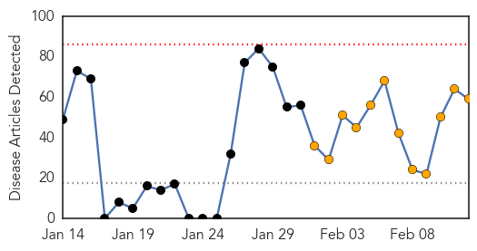
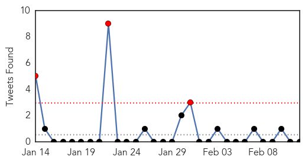
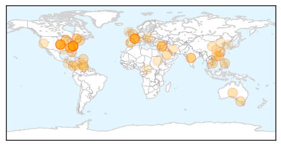

Toggle navigation
Early Warning
Daily Alerts
Unknown
Feb 12, 2014
Compare to:
-
Dengue Fever
Hemmorhagic Fever
Mold/Fungal Infection
Influenza
Meningitis
Pertussis / Whooping Cough
Middle East Respiratory Syndrome
Cholera
Hepatitis
Chikungunya
Yellow Fever
Bubonic Plague
West Nile Virus
Swine Flu
Ebola
Measles
Mumps
30 Day Trends
Web: 0
alerts
, 12
warnings
Twitter: 3
alerts
, 0
warnings
Top Articles:
Showing top 50 articles...
0.987
Boy becomes Cambodia's first bird flu death of year - Regional
0.986
18 may have been exposed to incurable disease
0.985
NC Hospital Says Patients Were Exposed To Deadly, Incurable Disease
0.982
Hospital May Have Exposed 18 People To An Incurable Disease!
0.980
Patients Exposed to Creutzfeldt-Jakob Disease
0.980
Homeland Security News Wire
0.942
Malaysia reports first H7N9 case outside China
0.919
Dentists drill councils over water fluoridation decay
0.917
UK weather: Contaminated floodwaters could lead to norovirus spike
0.917
Chicago Tribune
0.917
Chicago Tribune
0.917
Chicago Tribune
0.917
Chicago Tribune
0.917
Chicago Tribune
0.917
Chicago Tribune
0.917
Chicago Tribune
0.917
Chicago Tribune
0.917
Chicago Tribune
0.917
Chicago Tribune
0.917
Chicago Tribune
0.917
Chicago Tribune
0.917
Chicago Tribune
0.910
The world windows to Thailand
0.879
Hospital error may put patients at risk of incurable disease
0.871
Hong Kong reports fifth H7N9 bird flu case, Others news, Health News, AsiaOne YourHealth
0.866
A snow plow knocks snow off the an Atlanta expressway during an ice storm in Atlanta
0.866
Venezuela official says person killed in protest was gov't supporter
0.866
Syria govt says Geneva talks must discuss terrorism first -state TV
0.866
Colombia's teen mums seek escape from poverty
0.866
Earthquake of 6.9 magnitude strikes western China
0.856
PEDV threats prompts Wisconsin to cancel fair pig weigh-ins
0.788
Gonorrhea cases rise in Ottawa due to more unprotected sex
0.755
KRNV, Reno, NV
0.752
China Arrests Man, Known as 'Zhou,' For Reporting Bird Flu in Province
0.750
Rare brain disease: 18 hospital patients possibly exposed to incurable disease
0.745
In Pictures: India's drug-resistant TB crisis
0.741
Onderzoek naar NSA-afluisterschandaal: de onthullingen van de deskundigen
0.736
Newsroom Panama
0.719
Swine Virus Spreading Rapidly in Ontario
0.699
Suspected case of Middle-East flu reported
0.676
WAFB 9 News Baton Rouge, Louisiana News, Weather, Sports
0.659
China detains man for spreading "panic" with bird flu rumours
0.637
Sudan Vision Daily
0.629
China detains man for spreading "panic" with bird flu rumors
0.623
Midwest Health Information Exchanges Begin Sharing Information to Improve Care Across Missouri and Kansas
0.619
Canada Investigates Role of Feed in PED Virus Spread
0.581
The Riddle of What Is Killing Thousands of Central American Cane Workers
0.570
HPV Vaccine Not Widely Used or Trusted
0.549
'Money no object' in flood relief, UK's Cameron says
0.549
Thai court refuses to annul divisive February 2 election
Top Tweets:
No tweets found for Feb 12, 2014
Web/News Articles

Tweets

Article Locations

Article Confidences